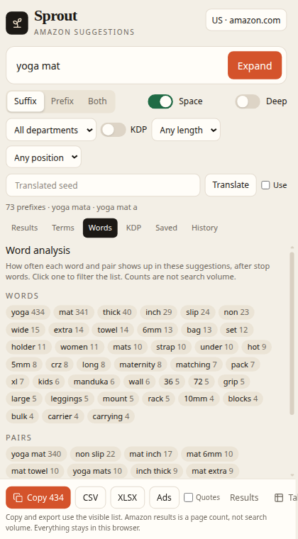
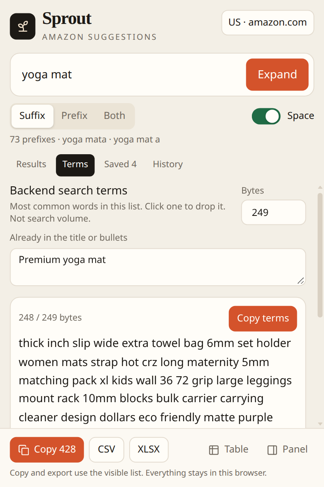
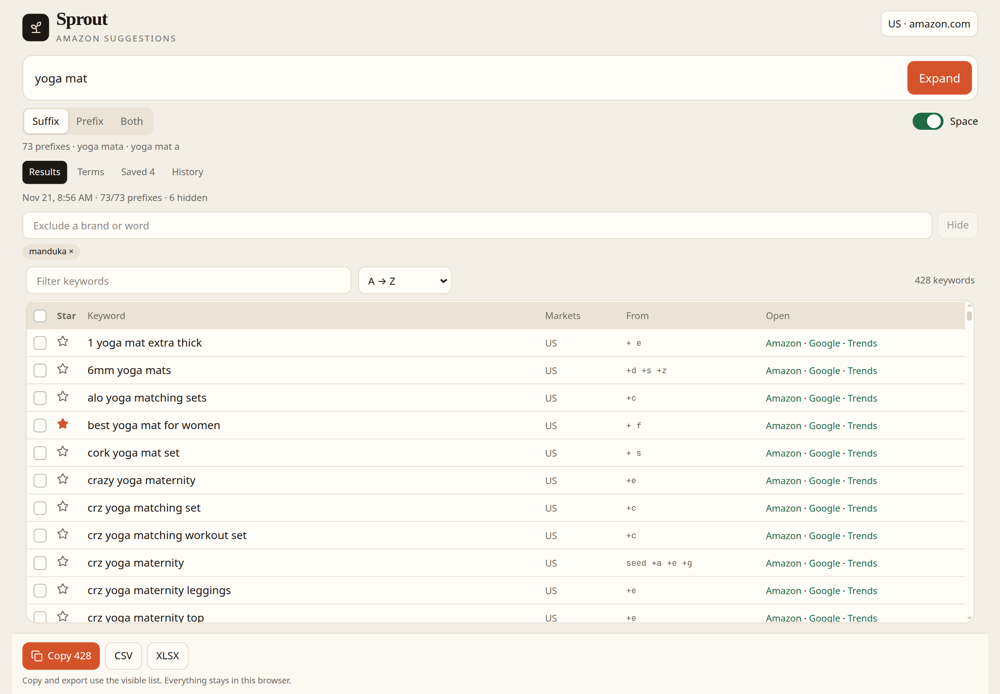

See it in action
What “free Amazon keyword research” can honestly mean
A lot of keyword tools charge for estimated search volume. That number can be useful, but it is an estimate from a private dataset, not something Amazon’s search box itself displays. If a free tool shows volume, CPC, or sales without saying where the figures came from, treat them with care.
Sprout stays on the part you can verify in the browser. It asks Amazon’s public autocomplete for your seed and for that seed plus each letter and digit — the same suggestions a shopper sees while typing — then deduplicates the list. From there you can filter, star, exclude words, fill Backend Search Terms, and export files. It does not invent search volume, cost per click, trends, or sales.
1. Install Sprout and pick a seed
Add the extension from the Chrome Web Store. It works in Chrome and in Brave. There is no account to create.
Open the toolbar icon, the side panel, or the button on an Amazon search page. Type a seed that a shopper might actually type — “yoga mat”, not a stuffed title. Pick a marketplace. If you already filtered the Amazon page to Books or another department, Sprout can start from that department.
Use the side panel for a long run. The popup closes when you leave it; the side panel keeps going if you switch tabs.
2. Expand autocomplete across letters and digits
Press Expand. Sprout requests the seed, then the seed plus A–Z and 0–9. You can glue the letter on, put a space before it, put the letter in front, or add short connectors such as for, with, and, and without. Results are deduplicated. Each row can show how it was found and whether extra words sit before, after, or around the seed.

The Words tab counts how often each word and pair appears in this list. That is frequency in the suggestion set, not monthly search volume. It is still a practical way to see which modifiers keep showing up — “thick”, “travel”, “kids”, and so on.

If you want a rough sense of catalog size, you can ask Sprout to read Amazon’s on-page result count for selected rows, about one page per second. The label says result count, not search volume. A robot check stops the queue. Use that number as a catalog clue, not as demand.
3. Build Backend Search Terms within 249 bytes
Seller Central’s Backend Search Terms field is commonly limited to 249 bytes, which is not the same as 249 characters once you use accented letters or some punctuation. The field is for words that are not already in your title, bullets, or other visible copy.
Sprout’s Search Terms builder takes words from the suggestion list, skips terms you mark as already in the title, and shows a running byte count so you can stay inside that 249-byte budget. You can drop a word and let the next one take its place. Paste the result into Seller Central and read Amazon’s own help for the current rules; they can change, and this page is not Amazon documentation.

4. Export an Amazon Ads bulk CSV
When the list looks right, export it. Sprout can download:
- CSV, for a simple keyword column you can paste anywhere.
- XLSX, with a second sheet for word analysis.
- An Amazon Ads bulk sheet with Campaign, Ad Group, Keyword, and Match Type columns, which you can open in a spreadsheet and adjust before uploading to Ads.

The bulk sheet is a starting file, not a finished campaign. You still choose match types, bids, and structure. Sprout does not place ads or connect to Seller Central.
What you should still do yourself
Autocomplete tells you how Amazon completes a phrase. It does not tell you how many people search it, what they buy, or how hard the results page is. After you export:
- Search the term on Amazon and look at the actual results, prices, and reviews.
- If you have Brand Analytics, Search Query Performance, or a paid research suite, compare the list there.
- Drop phrases you cannot honestly put in a listing, including brands you do not sell.
KDP authors can take the same list into seven boxes of 50 characters. If you are coming from a paid expander, see the AMZ Suggestion Expander comparison.
Frequently asked questions
Is there a free Amazon keyword tool that does not invent search volume?
Sprout is a free Chrome and Brave extension that expands Amazon’s public autocomplete into a list you can filter and export. It does not estimate search volume, CPC, trends, or sales. Word counts are frequency in the current list. Result counts are the number Amazon already shows on a search page, and only for rows you ask for.
How do I build Amazon Backend Search Terms for 249 bytes?
After you expand a seed, open Sprout’s Search Terms builder. It ranks useful words from the suggestion list, counts them in bytes rather than characters, and aims at the usual 249-byte Backend Search Terms field. Words already in your title can be skipped so you do not waste the space.
Can I export Amazon keywords to an Ads bulk CSV for free?
Yes. Sprout’s free export includes a bulk sheet with Campaign, Ad Group, Keyword, and Match Type columns, as well as ordinary CSV and XLSX. There is no account and no daily export cap in the extension.
Does this replace Helium 10, Cerebro, or Brand Analytics?
No. Those products, and Amazon’s own Brand Analytics where you have access, are demand and competition tools. Sprout only collects the suggestions Amazon already shows as people type. Use it to build a list, then validate demand with sources you trust.
Do I need to create a Sprout account?
No. There is no account, no tracking, and no Sprout server. Autocomplete requests go from your browser to Amazon. Results stay on the device.